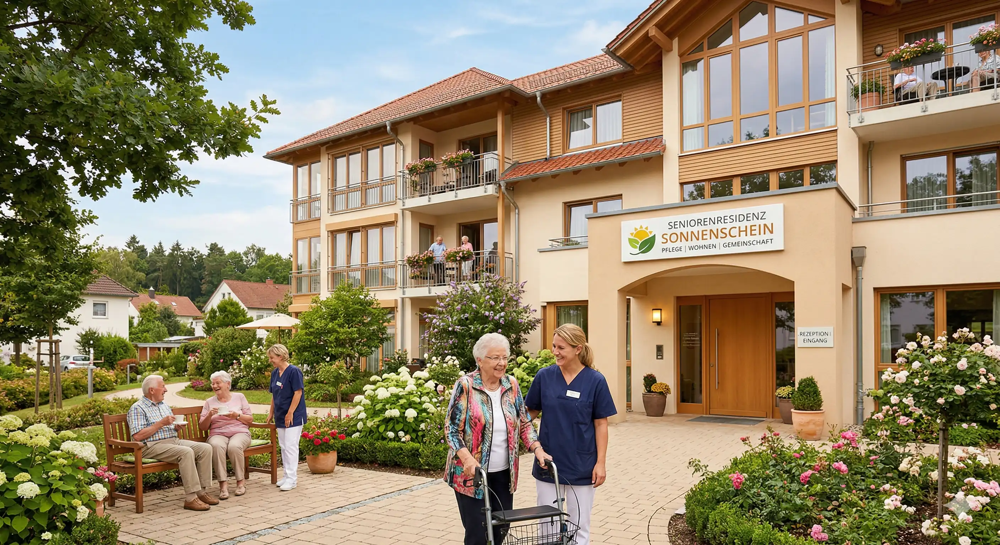

Willkommen bei den Seniorendiensten
Appenweier & Urloffen gGmbH
Die Seniorendienste Appenweier & Urloffen gGmbH ist seit ihrer Gründung im Jahr 2004 ein wichtiger Anbieter eines zwischenzeitlich vollumfänglichen Altenhilfeangebots im Quartier Appenweier-Urloffen-Nesselried. Mit der Gründung der Seelsorgeeinheiten ist die Kirchengemeinde Appenweier - Durbach alleiniger Gesellschafter. Dementsprechend hat sich auch die Zuständigkeit und Verantwortlichkeit neu geregelt. Seit der Gründung der GmbH hat sich das Leistungsspektrum stetig erweitert und umfasst zwischenzeitlich neben der klassischen stationären Pflege und Kurzzeitpflege im Altenpflegeheim St. Martin auch zahlreiche ambulantisierte und vorstationäre Angebote. So ist die GmbH auch Anbieter einer Tagespflege, die seit Sommer 2017 – durch den Erwerb und Um- und Erweiterung des Pfarrhauses in Urloffen – statt zuvor 12 nun 18 Plätze in modernen Räumlichkeiten anbieten kann. Im gleichen Gebäude wurde im 2. OG eine ambulant betreute Wohngemeinschaft für 8 Bewohner eingerichtet und Anfang 2018 in Betrieb genommen. Die WG stellt eine Alternative zum stationären Setting dar und ist insbesondere für dementiell erkrankte Menschen eine Wohnform, die durch die familienähnliche und kleingliedrige Struktur bestmöglich auf deren Bedürfnisse sehr individuell eingehen kann.
